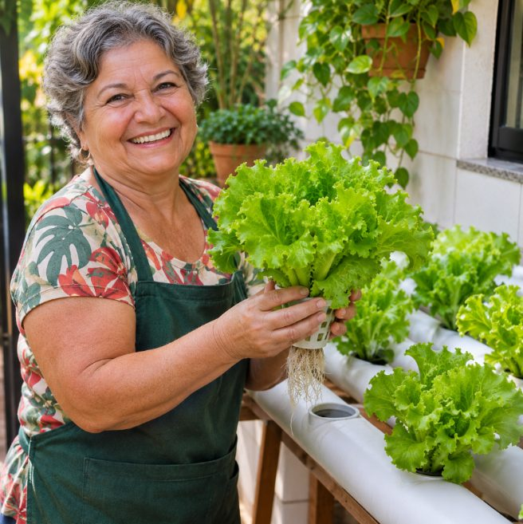
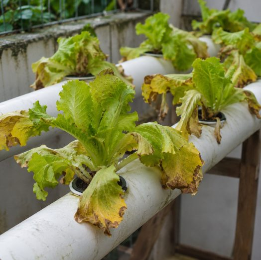
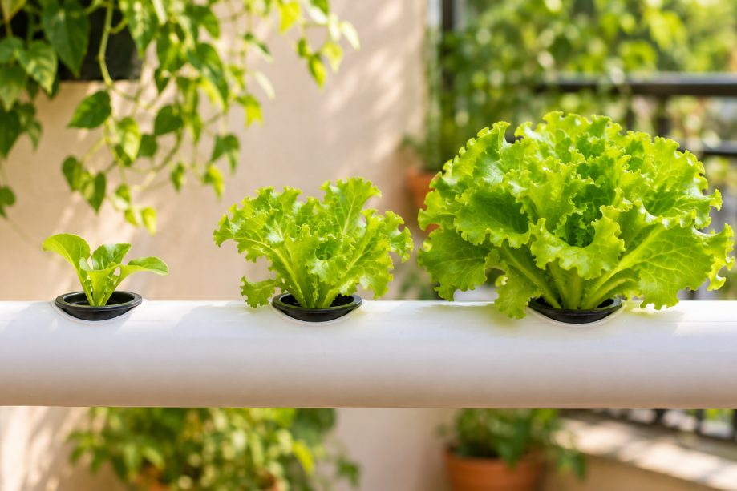
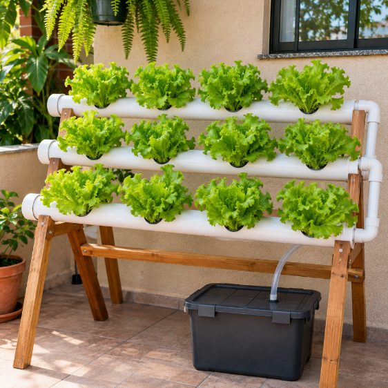
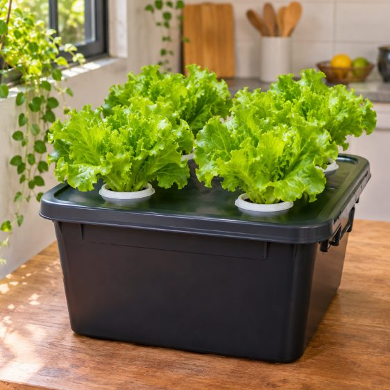
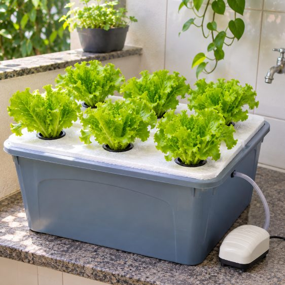
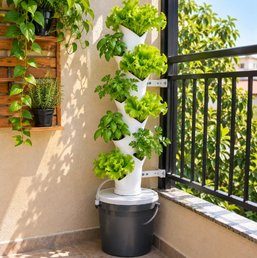
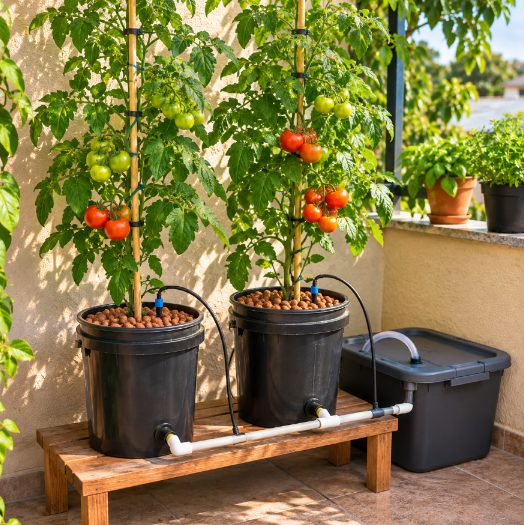

Alface fresquinha na sua casa toda semana, mesmo que você já tenha desistido de horta antes

Você só vai precisar de:
- Um cantinho em casa: varanda, área de serviço, quintal ou janela
- 2 minutos por dia, cuidando em pé, sem abaixar
- O app que avisa o que fazer em cada dia
São 8 perguntas rápidas. Leva menos de 1 minuto.
Se a sua horta já morreu antes, a culpa não foi sua

A maioria das hortas caseiras morre entre a 2ª e a 5ª semana por um motivo que ninguém enxerga: a água muda sem dar sinal. Quando a folha amarela, o problema já tem dias.
Na Horta Guiada, o app avisa você antes disso acontecer. Vamos continuar?
Da muda à colheita em cerca de 5 semanas

- Monte com a lista de compras e o passo a passo, uma etapa por tela.
- Cuide 2 minutos por dia com a tarefa que o app mostra.
- Colha na data que o app calcula para a sua horta.
Montando o seu projeto…
- Analisando o seu espaço
- Escolhendo o sistema certo
- Calculando o custo dos materiais
- Preparando o seu calendário de colheita
Pronto! Este é o seu projeto ideal:
Bancada NFT 12

Assista antes de montar a sua horta
Vídeo em breve
O motivo nº 1 pelo qual hortas caseiras morrem, e como o app resolve isso
O Desequilíbrio Silencioso da Água
Com as plantas bebendo, a água do reservatório muda todos os dias: a acidez sobe ou desce e o adubo fica fraco ou forte demais. Nada disso aparece a olho nu.
Livros, cursos e apostilas ensinam a montar e depois deixam você sozinho justo na fase em que a horta mais precisa de cuidado.
- Monta e fica sem saber o que fazer depois
- Descobre o problema quando a folha já amarelou
- Faz conta de grama e mililitro
- Acha que "não leva jeito"
- Uma tarefa de 2 minutos por dia
- Aviso no WhatsApp antes do problema
- Adubo medido em colheres
- Colheita no dia previsto
O Método RAIZ
Rotina de 2 minutos
A tela "Hoje" mostra uma única tarefa simples: completar a água, medir a acidez ou simplesmente nada.
Alerta antes do problema
O app sabe a idade de cada planta e avisa no WhatsApp no dia certo.
Identificação por foto
Tirou foto da folha, recebe a causa provável e o que fazer agora.
Zero cálculo
Diga quantos litros tem e o app responde quantas colheres de cada adubo usar.
Projetos para qualquer cantinho




Horta Guiada: plano anual
- App com o seu projeto ideal e mais de 10 projetos para escolher
- Montagem passo a passo, uma etapa por tela, com lista de compras
- Tarefa do dia, calendário de colheita e lembretes no WhatsApp
- Calculadora do adubo em colheres e leitura da fitinha de acidez
- Doutor da Planta: diagnóstico por foto
- Letra grande, botão "Ouvir" e uma pessoa de verdade para tirar dúvidas
E mais 5 bônus:
Projetos na altura da cintura e reservatório que não precisa carregar.
Um áudio de 2 minutos para cada dia, do dia 1 ao 7.
A lista de compras em letra grande para mostrar no balcão da loja.
Saladas, sucos verdes e temperos com o que você colher.
Grupo de avisos no WhatsApp e uma live mensal de perguntas.
De R$197
por apenas
R$37
12 meses de acesso · ou parcelado no cartão
Quero começar a minha hortaAcesso enviado no seu WhatsApp e e-mail.
Garantia de 30 dias
Use o app por 30 dias. Se não achar fácil, ou simplesmente não gostar, mande uma mensagem e devolvemos todo o seu dinheiro.
Perguntas frequentes
Não sou bom com celular. Vou conseguir?
Foi pensado para isso: letra grande, uma tarefa por tela, botão "Ouvir" que lê tudo em voz alta e entrada com código pelo WhatsApp, sem senha. E se travar, tem uma pessoa para ajudar.
Moro em apartamento. Serve para mim?
Serve. Tem projetos para janela, mesa, área de serviço e varanda. O quiz escolhe o que cabe no seu espaço.
Quanto vou gastar com o material?
Depende do projeto. Os menores começam por volta de R$30 a R$60 e o app mostra a estimativa antes de você comprar. Os valores mudam de cidade para cidade.
Preciso entender de hidroponia?
Não. O app explica tudo com palavras simples e diz o que fazer em cada dia.
É pagamento único ou mensal?
Você paga uma vez e usa por 12 meses. Depois disso, renova só se quiser.
Como recebo o acesso?
Logo depois do pagamento chega um link no seu WhatsApp e no seu e-mail. É só tocar e o app abre no celular.